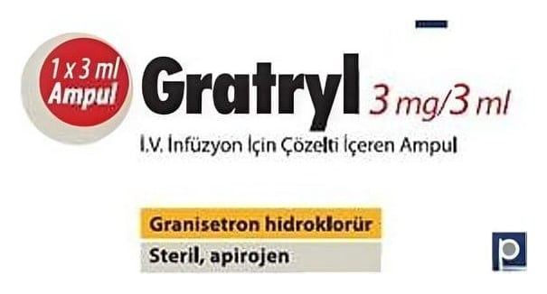

Gratryl 3 mg/3 ml IV İnfüzyon İçin Çözelti İçeren Ampul, 1 Adet

Ne için kullanılır
KT · Bölüm 1• GRATRYL damar içine uygulama için renksiz veya hafif sarı renkli, berrak çözelti içeren cam ampul halinde (3 mL'Iik), 1 veya 5 adet ampul içeren ambalajlarda piyasaya sunulmaktadır.
• GRATRYL "5-HT
reseptör antagonistleri" veya "anti-emetikler" (bulantı ve kusmayı önleyici) olarak isimlendirilen ilaç grubuna dahil olan granisetron adlı etkin maddeyi içermektedir.
• GRATRYL kanserin ilaç veya ışın ile tedavilerinden veya ameliyattan kaynaklanan bulantı ve kusmanın (kendini kötü ve hasta hissetme) önlenmesinde veya tedavisinde kullanılmaktadır.
• Enjeksiyon solüsyonu yetişkinlerde ve 2 yaş üzerindeki çocuklarda kullanım içindir.